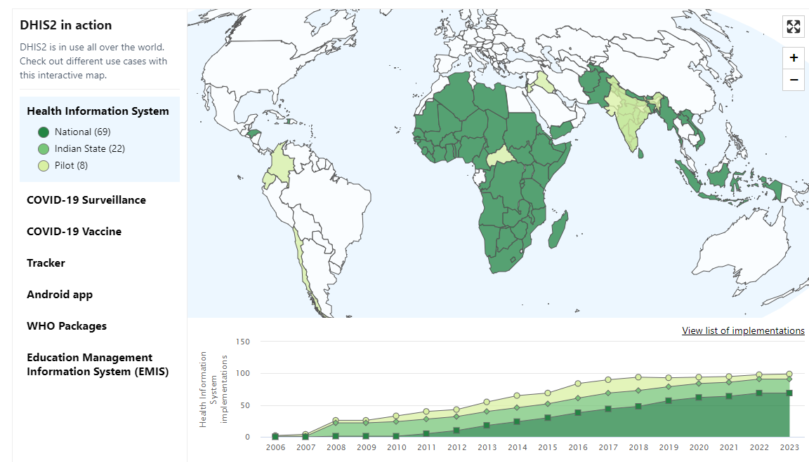

Programa de seguimiento en Dhis2
Equipo de Data Science y Gestión de Información
Departamento de Epidemiología
Ministerio de Salud
Presentado por: Santiago Farías
Hoja de ruta
Objetivo Principal
Mostrar el alcance de esta herramienta en la gestión de programas de salud y su potencial para abordar brotes de enfermedades transmisibles
Objetivos secundarios
- Explicar como funciona un program Tracker
- Explicar como funciona un la gestión de usuarios
- Explicar el diseño de la plataforma
- Dar Ejemplos de uso: Programa Paxlovid
¿Qué es Dhis2?
Dhis2 es una Plataforma, no un Sistema
- Es una plataforma de código abierto y flexible que permite la captura, el manejo y análisis de información de salud.
- Desarrollada por la Universidad de Oslo, esta herramienta es ampliamente utilizada en más de 69 países y cuenta con el respaldo de la Organización Mundial de la Salud (OMS).

Alcance de la plataforma
Dhis2 en el mundo
Programa de seguimiento
¿Que es un Programa de seguimiento?
- Es un tipo de programa diseñado para capturar, monitorear y analizar información relacionada con eventos y casos individuales a lo largo del tiempo
- Permiten a los usuarios registrar y analizar datos a nivel de individuo
Flujo de trabajo
- Ingresar los detalles del programa
- Asignar las variables
Proporcionar la información básica sobre el programa, como el nombre, la descripción, el tipo de programa.
Seleccionar las variables que se capturarán durante cada evento. Estos son los datos que se recopilarán, como la fecha del evento, los resultados de las pruebas o las intervenciones realizadas.
Flujo de trabajo
- Crear los formularios de entrada de datos
- Asignar el programa a las unidades organizativas
- Crear notificaciones del programa
Se puede configurar y deseñar los formularios que se utilizarán para ingresar los datos en el programa.
Las unidades pueden incluir hospitales, clínicas, comunas, APS u otras dentro del sistema de salud.
Configure las notificaciones automáticas que se enviarán a los usuarios o grupos de usuarios en función de eventos.
Etapas del Programa
Cada programa en DHIS2 se compone de varias etapas, que representan los pasos o actividades involucradas en el proceso de salud
- Registro del paciente
- Etapa 1
- Etapa 2
- Etapa 3
Usuarios en Dhis2
Una de las características clave de DHIS2 es la capacidad de gestionar diferentes tipos de usuarios con diferentes niveles de acceso y permisos
👥
Profesional de salud
- Asociados a uno o más establecimientos de Salud
- Registrar información en los programas asignados
- Modificar la información de un paciente en un programa
Usuario Validador de información
- Asociados a uno o más establecimientos de Salud
- Asociados a uno o más programas de salud
- Validar la información ingresada en los formularios de registro de un programa de salud
Establecimientos, Comunas, Servicios de Salud Y SEREMI
Visualizar la información de los programas de salud asociados a su dependencia
🏥
Diseño de Dhis2
La interfaz es intuitiva, fácil de navegar y diseñada para adaptarse a las necesidades de los usuarios
Dashboard
Los paneles de control pueden ser personalizados para mostrar gráficos, tablas, mapas y otros elementos visuales.